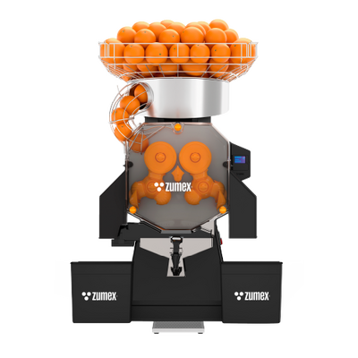
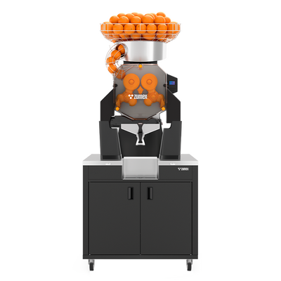
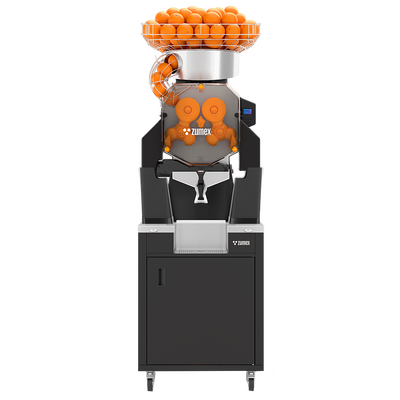
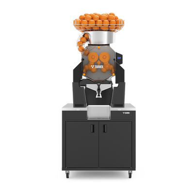
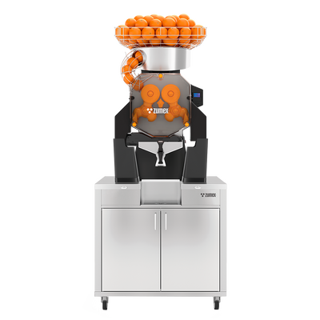

Citrusové odšťavňovače
Speed Up
Výkon pro vaši největší špičku.
Rychlá příprava citrusových šťáv pro intenzivní provoz. Vyberte stolní provedení nebo sestavu All-in-One s podstavcem Wide či Slim.
Poptat tento produktCenu a dostupnost vám potvrdíme podle konfigurace.
40 plodů/minVýkon
20 kgZásobník
65–81 mmPrůměr ovoce
Navržen pro váš provoz.
Speed Up je určen pro intenzivní výdej čerstvé šťávy v obchodech, velkých bufetech a vytížených gastroprovozech. Výkon 40 plodů za minutu a zásobník na 20 kg ovoce pomáhají zvládat odběrové špičky s menší četností doplňování.
Kohoutek Up Tap je navržen pro plnění lahví. Vybrat lze stolní provedení nebo samostatné komplety All-in-One Wide a Slim; chytré varianty jsou označeny Smart. Stolní stroj má dvě nádoby na slupky a možnost propojení s odvodem odpadu pod bar.
Široká nabídka podstavců a povrchových úprav.
Smart varianty s propojenými funkcemi.


CO ZPRACUJE
Suroviny pro Speed Up
Speed Up je stavěný na intenzivní výdej čerstvé šťávy. Zpracuje:
- Pomeranče
- Citrony (s Kitem S)
- Limetky (s Kitem S)
- Standardní průměr
- 65–81 mm
- Kit S 1Step (volitelně)
- 45–67 mm
VYBERTE SI PROVEDENÍ
Jedna řada. Vaše konfigurace.

Speed Up
Volte rozměry kompletu podle šířky místa instalace. Pro menší ovoce a odvod slupek lze doplnit odpovídající sady; jejich kompatibilitu ověříme podle modelu.
Poptat variantu
Speed Up All-in-One Wide Black
Širší samostatný komplet pro umístění do samoobslužného prodejního prostoru.
Poptat variantu
Speed Up All-in-One Wide Mirror
Širší samostatný komplet pro umístění do samoobslužného prodejního prostoru.
Poptat variantu
Speed Up All-in-One Slim Black
Užší samostatné provedení pro prodejní místa s omezenou šířkou.
Poptat variantu
Smart Speed Up
Chytré provedení řady. Konektivitu a rozsah vzdálených funkcí potvrdíme pro vybranou konfiguraci.
Poptat variantu
Smart Speed Up All-in-One Wide Black
Chytré provedení řady. Konektivitu a rozsah vzdálených funkcí potvrdíme pro vybranou konfiguraci.
Poptat variantu
Smart Speed Up All-in-One Wide Mirror
Chytré provedení řady. Konektivitu a rozsah vzdálených funkcí potvrdíme pro vybranou konfiguraci.
Poptat variantu
Smart Speed Up All-in-One Slim Black
Chytré provedení řady. Konektivitu a rozsah vzdálených funkcí potvrdíme pro vybranou konfiguraci.
Poptat variantuFotografie jsou ilustrační pro danou řadu. Výbava a technické parametry se mohou lišit podle varianty.
KOLIK MÍSTA POTŘEBUJE
Rozměry
Stolní verze
- Výška1 050 mm
- Šířka593 mm
- Hloubka624 mm
- Hmotnost76,7 kg
All-in-One Wide
- Výška1 775 mm
- Šířka810 mm
- Hloubka682 mm
- Hmotnost133 kg
Rozměry provedení All-in-One Slim vám potvrdíme podle konfigurace.
Údaje výrobce. Přesné rozměry pro vaši konfiguraci rádi ověříme.
Výška
1 050 mm
1 050 mm
Šířka 593 mm
Barvy
Provedení podle konfigurace
- Black
- Mirror (All-in-One Wide)
Barevné odstíny na obrazovce jsou orientační. Vzorník vám rádi ukážeme.
PODROBNĚ A PŘEHLEDNĚ
Technické parametry.
- Výkon
- 40 plodů/min
- Zásobník
- 20 kg
- Standardní průměr ovoce
- 65–81 mm
- Rozměry stolní verze (š × h × v)
- 593 × 624 × 1 050 mm
- Hmotnost stolní verze
- 76,7 kg
- Výdej
- Up Tap
- Krytí
- IPX4
- Jazyky nastavení
- 23
- Provedení
- Stolní / All-in-One Wide / Slim
- Typ provozu
- Velmi vysoký
- Kit S 1Step
- 45–67 mm (volitelně)
- Držák lahví
- 34,4 / 36 / 38 mm
- Spotřeba proudu
- 1,9 A / 2,7 A / 3,5 A
- Příkon
- 460 W | 0,62 HP (230 V)
- Odpad
- Stolní: 2 nádoby. Wide: 2 × 70 kg. Slim: 1 × 45 kg
- All-in-One Wide (š × h × v)
- 810 × 682 × 1 775 mm
- Hmotnost All-in-One Wide
- 133 kg
Údaje výrobce pro uvedené provedení. Výkon závisí na surovině a konfiguraci. Zdroj: Zumex ↗
Co zvážit při výběru
Volte rozměry kompletu podle šířky místa instalace. Pro menší ovoce a odvod slupek lze doplnit odpovídající sady; jejich kompatibilitu ověříme podle modelu.
Probrat vhodnou konfiguraci ↗CO UVNITŘ DĚLÁ ROZDÍL
Technologie a výbava.
Original System®
Lisovací systém pro maximální výtěžnost a kvalitu šťávy.
Automatický PulpOut
Trojitý filtrační pás propustí rozpustnou vlákninu a odstraní nepříjemná dlouhá vlákna.
Antibakteriální technologie ASP
Ionty stříbra brání růstu bakterií.
VŠE PODSTATNÉ PO RUCE
Technické podklady.
Podrobnosti, dostupné příslušenství a materiály výrobce.